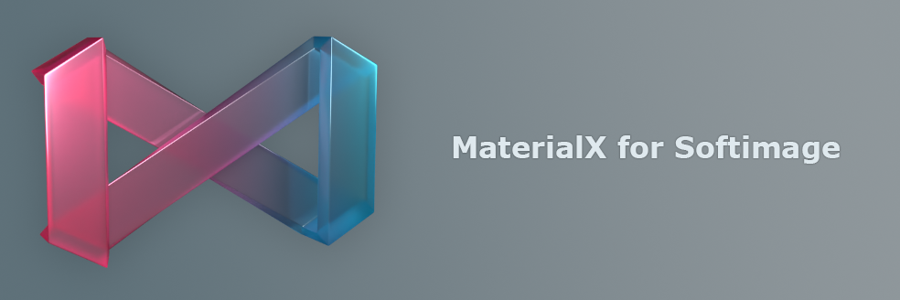

MaterialXSI 0.1
Last update: 12.05.2024
Description: this addon is an initial implementation of the MaterialX integration into Softimage.
Download: addon version 0.1, sources on the GitHub
How to install: install as usual addon for Softimage.
How to use: some basic functionality described on GitHub page